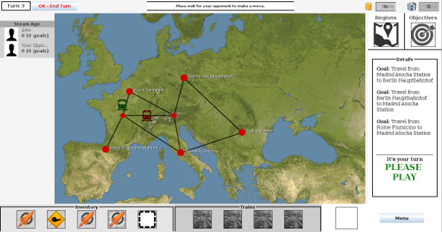

TAxE Game
This is the website for the TAxE Game developed by the EEP team for the Software Engineering Project module at the Department of Computer Science, University of York.
It is a train simulator game that can be played by two players over the Internet.
Run the game
You can run the Game on virtually any PC with the Java Runtime Environment version 7 or higher. You can download the JRE for free at java.com. The game has been tested to work on the Windows and Linux PCs at the Department of Computer Science, University of York.
- Download taxe-game.jar and open it;
- If a security prompt is shown, click "Allow" - we're trustworthy;
- Click OK to choose default game server and run the game;
- Play!

Host your own server
By default, the Game tries to connect to an instance of the Game server that can be used for testing.
To host your own server, you'll need a PC running either Linux or Mac OS with NodeJS installed. You can download NodeJS from here.
To run the server, type in a terminal:
git clone https://github.com/SEPR-EEP/taxe-server
cd taxe-server
node server.jsThis will start a game server listening on port 8042. Make sure this port is reachable from the Internet. You can then type http://<your-ip>:8042 to connect to your server when starting the Game.
Note: In some Linux distributions such as Ubuntu and its derivatives, you may need to type nodejs instead of node.
See also
Features of the Game
- Network architecture — The game clients exchange game data using a Server. This allows users to play over the Internet;
- Easy to extend — The Server is very simple and independent from the Game models - its only role is to exchange objects between the clients, plus the simple lobby sistem. All of the Game logic is implemented in the Game Clients in Java, so there's no need to touch the server code if you extend the Game;
- MVC Pattern — The Model-View-Controller architectural pattern separates the User Interface (the View), the Models and the Controller (catching events and implementing actions). This allows team members to easily work on different aspect of the same code;
- Well documented — The Game code is written in such a way to be read and understood very easily, as well as extensively commented. See for yourself;
- API Reference — The use of Javadoc-style comments allows the generation of a very clear Reference for all of the Classes and Methods. Give a look at our beautiful API reference.
Authors
- Cosgrove, Richard (rc1035@york.ac.uk);
- Dong, Yindi (yd695@york.ac.uk);
- Fresta, Alfio Emanuele (aef517@york.ac.uk);
- Grierson, Andy (ag1106@york.ac.uk);
- Kokov, Stefan (sk1056@york.ac.uk);
- Lippit, Peter (pjl513@york.ac.uk).